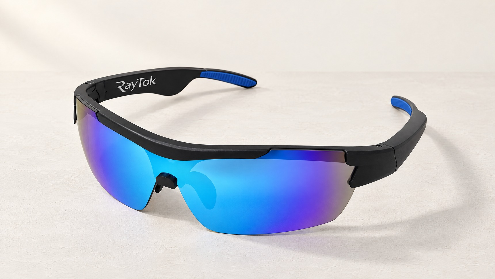
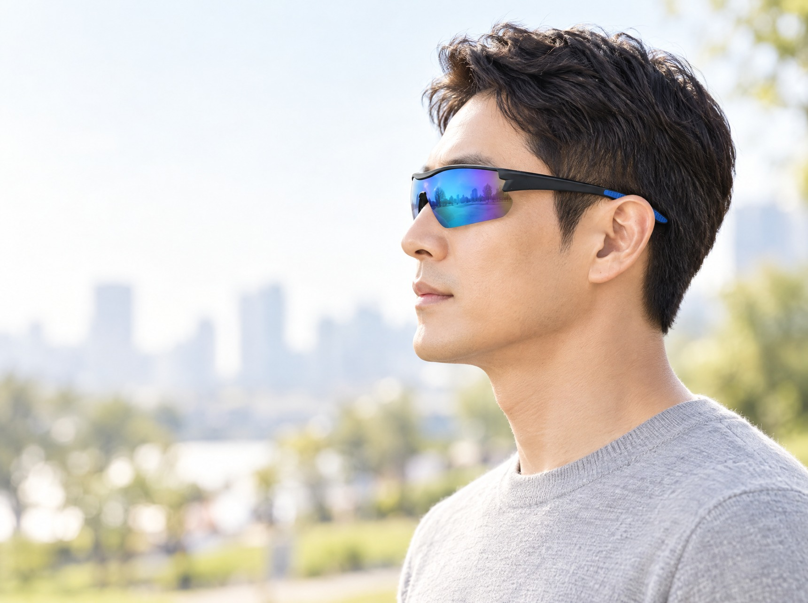
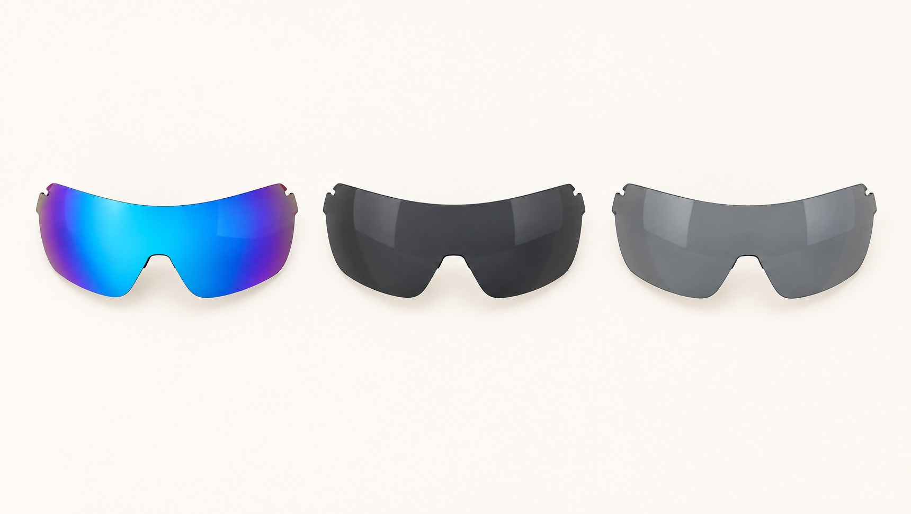
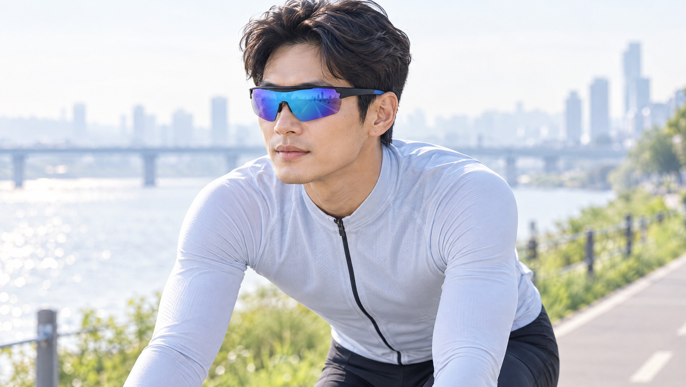
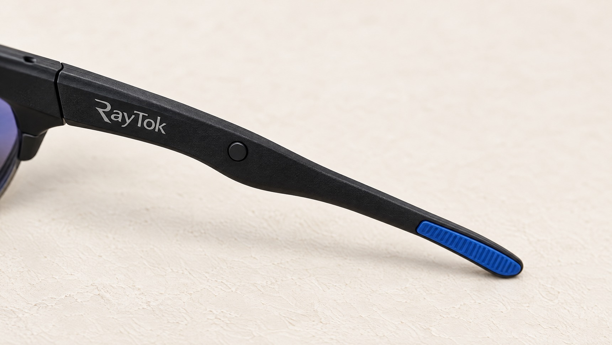
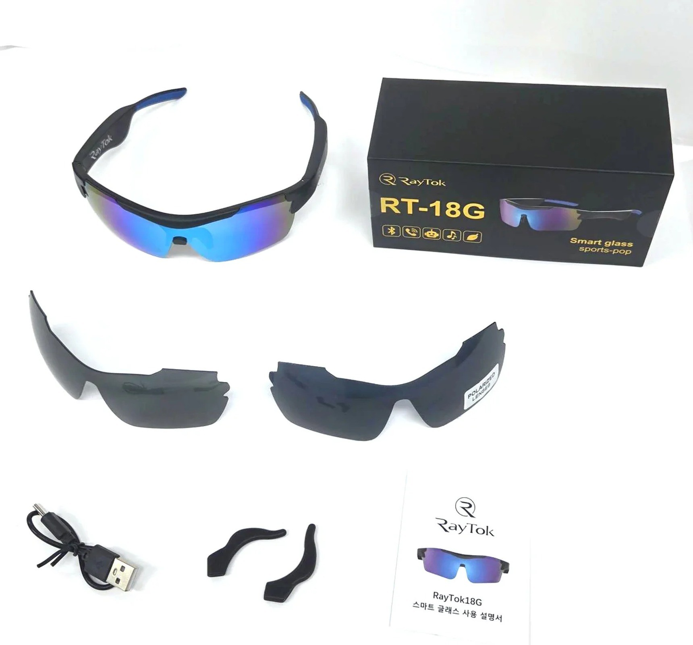

귀를 막지 않는 공기전도 방식. 음악과 통화, 그리고 통역까지.

귓바퀴 앞에서 소리를 보냅니다. 귓속은 비워 둡니다.

하루 종일 써도 귓구멍이 먹먹해지지 않습니다.
음악을 들으면서 주변 소리가 그대로 들립니다.
선글라스를 벗지 않고, 휴대폰을 꺼내 들지 않고.
번역 앱에서 자주 비어 있는 언어까지 직접 만들었습니다.
언어팩을 한 번 받으면 그 뒤로는 휴대폰이 처리합니다.
※ 번역은 전용 앱에서 동작합니다. 음성 안내는 사용 기기에 설치된 언어에 한해 제공되며, 그 외 언어는 글자로 표시됩니다.
서버에서 번역하면 쓸 때마다 돈이 나갑니다. RayTok은 휴대폰 안에서 번역합니다.
언어 추가 구매 0원, 사용 시간 과금 0원.
※ 폰에 그 언어가 없으면 서버가 번역합니다(인터넷 필요).
미러 · 스모크 · 편광. 전부 UV400.



처음 한 번만 블루투스에서 고르면, 그 뒤로는 자동으로 연결됩니다.
한 번 누르면 재생, 두 번 다음 곡, 길게 누르면 음성비서.
앱에서 언어를 고르면 상대의 말이 선글라스로 들립니다.
| 소리 방식 | 공기전도 개방형 — 귀에 넣지 않습니다 |
|---|---|
| 블루투스 | V5.0 · 첫 연결 후 자동 페어링 |
| 조작 | 다리 바깥쪽 버튼 한 개 |
| 무게 | 37g |
| 사용 시간 | 약 5시간 (충전 약 1.5시간) |
| 입력 | DC 5V, 1A · USB Type-C |
| 렌즈 | PC · UV400 · 3장 (미러 · 스모크 · 편광) |
| 소재 | 프레임 PC · 템플 PC |
| 크기 | 166 × 81 × 69 mm |
| 구성품 | 본체 · 렌즈 3장 · USB Type-C 케이블 · 교체용 귀 뒷걸이 2개 · 한글 설명서 |

| 제조사 | CGTEK TECHNOLOGY CO., LIMITED |
|---|---|
| 제조국 | 중국 |
| 수입 · 판매 | 주식회사 피엔엘에코 |
| A/S 책임 | 주식회사 피엔엘에코 · 1800-6825 |
| 품질보증 | 구입일로부터 1년 · 소비자분쟁해결기준에 따릅니다 |
주식회사 피엔엘에코 · 대표 박용음
경기도 화성시 동탄대로 635, SH TIME SQUARE Ⅰ 1동 15층 1507호
사업자등록번호 376-88-02280 · 통신판매업 2025-화성동탄-2002
1800-6825 · raytok.kr
제품 사진 중 일부는 연출 이미지이며, 화면에 따라 색이 다르게 보일 수 있습니다.
RayTok은 통역 도구입니다. 통역사를 대신하지 않으며, 기계 번역에는 오역이 있을 수 있습니다.